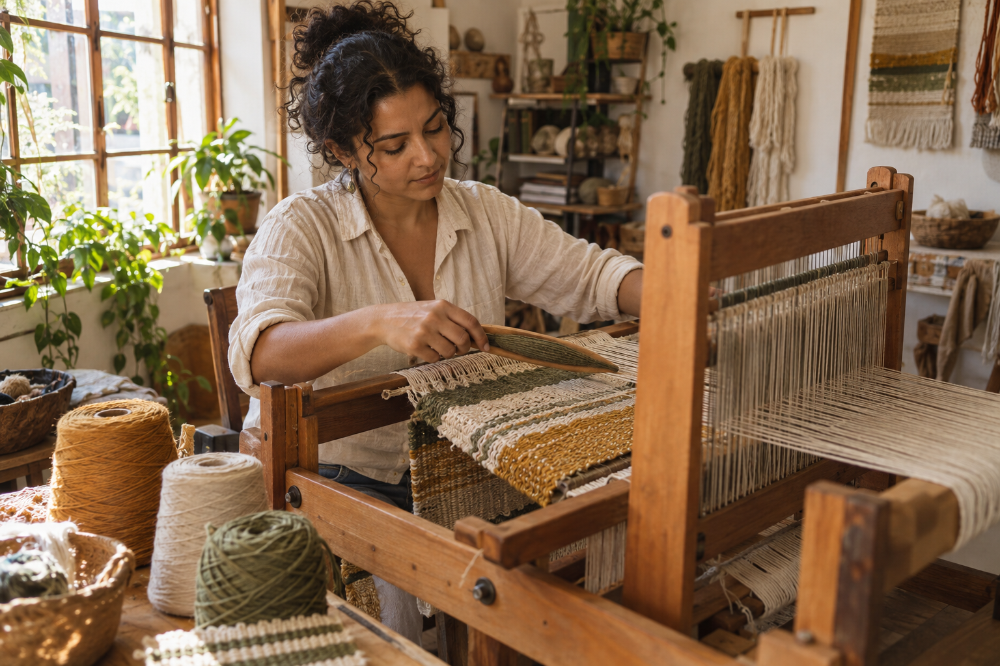
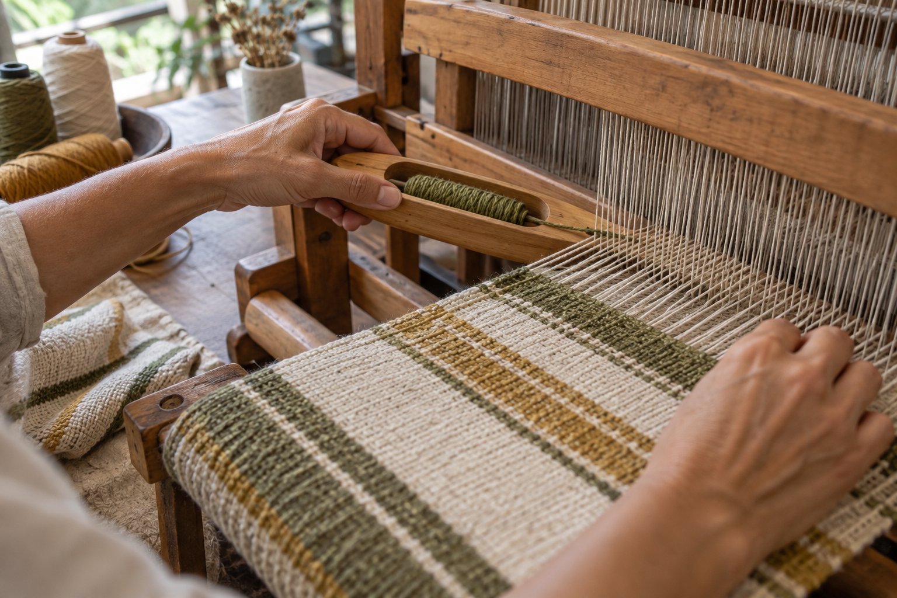
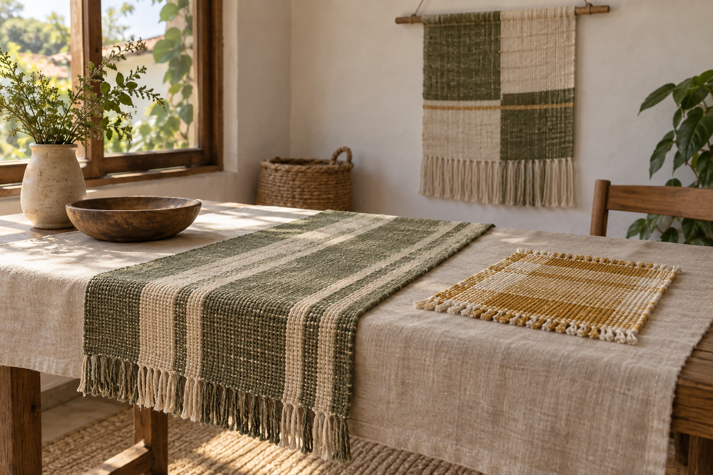

Você se encanta com os tecidos, mas ainda não sabe escolher o tear ou os primeiros fios.
Fio, tempo e mãos
Dê forma aos seus fios.
Crie tecidos com história.
Um caminho para aprender tecelagem manual, entender as fibras e criar peças que carregam o seu olhar. Do primeiro encontro com o tear ao acabamento.
tear de mesafibras naturaisprática guiadano seu ritmo

O caminhofibra → urdume → trama → acabamento

Antes de começar
Você não precisa de um grande ateliê para abrir espaço para criar.
Você já experimentou, mas a tensão e as bordas deixam o resultado diferente do que imaginava.
Você quer desenvolver suas próprias composições, com menos receitas e mais autonomia.
Uma mudança de olhar
O tecido começa antes do primeiro ponto.
Começa na fibra que você escolhe, na relação entre as cores e no cuidado ao preparar o tear. Entender essas escolhas torna a prática mais livre — e cada peça, mais sua.
O método
Um fio de cada vez.
Um caminho inteiro.
Primeiro, perceber o material. Depois, preparar a estrutura, experimentar a trama e finalizar. Você aprende o raciocínio por trás do gesto para poder criar outras peças.
Explorar a trilhaObserve textura, espessura e comportamento do algodão e do linho.
Organize os fios que sustentam o tecido e ajuste sua tensão.
Experimente ritmo, cor e desenho com a lançadeira.
Retire a peça do tear e dê atenção às bordas e às franjas.
Aprender com as mãos
O gesto ensina o que a pressa não vê.
Assistir, pausar, repetir e observar. A proposta é aproximar a explicação do fazer, respeitando o tempo que cada pessoa precisa para compreender o material.
A proposta da escola
Da primeira amostra a uma peça que encontra lugar na casa.
Uma trilha pensada para transformar pequenos exercícios em repertório. Cada etapa acrescenta uma escolha ao seu jeito de tecer.
Fundamentos do tear de mesa
Preparação, tensão, trama simples e acabamento em uma sequência de práticas.
Fibras e suas possibilidades
Um caderno para comparar amostras e registrar como cada fio se comporta.
Cor, ritmo e textura
Exercícios para criar combinações próprias, com espaço para testar e mudar.
Do exercício ao projeto
Planejamento de medidas, seleção dos fios e cuidados com a peça pronta.
AmostrasDescanso de mesaPainel têxtilCaminho de mesaComposição de parede
Como aprender
Uma prática possível dentro da sua rotina.
01Prepare seu espaço
Uma mesa firme, boa luz e os materiais básicos perto de você.

02Escolha um projeto
Comece pequeno para conhecer o fio e perceber suas escolhas.
03Faça e observe
Repita os gestos, compare as amostras e registre o que descobriu.
04Finalize com cuidado
Veja como a borda, a lavagem e o uso transformam o tecido.
Um lugar para começar
Para quem quer fazer da curiosidade uma prática.
Você está começando e quer entender a tecelagem desde a preparação do tear.
Você já trabalha com as mãos e deseja explorar outra linguagem.
Você gosta de materiais naturais e quer conhecer melhor suas possibilidades.
Você quer criar peças próprias, com atenção ao processo e ao uso.
Possibilidades
O mesmo gesto.
Outras formas de habitar.
Um caminho de mesa, uma composição na parede, um pequeno tecido para um objeto querido. A trama ganha sentido quando encontra a vida cotidiana.
Composições ilustrativas criadas para esta escola demonstrativa.
O que nos move
Conhecimento que passa de mão em mão.
A Entretrama nasce, neste estudo, como uma escola que aproxima técnica e sensibilidade. Um lugar para observar os materiais, compartilhar descobertas e construir autonomia pelo fazer.
- Explicações próximas do gesto e do material.
- Projetos pequenos que abrem novas possibilidades.
- Atenção ao processo, à durabilidade e ao cuidado.
Seu primeiro encontro com a trama
Comece conhecendo o caminho.
Uma amostra. Muitas descobertas.Explore a proposta de uma primeira prática.
Prévia da trilha da Entretrama.
Dúvidas comuns
Antes do primeiro fio.
Preciso saber tecer?
A trilha foi pensada para começar pela preparação do tear e pelas primeiras amostras, sem pressupor experiência anterior.
Que tipo de tear aparece na proposta?
Um tear de mesa. Antes de escolher um modelo, confira a largura de trabalho, o espaço disponível e os materiais compatíveis com ele.
É preciso ter um ateliê?
Um espaço confortável, iluminado e com uma mesa firme já permite organizar uma prática pequena.
Posso me inscrever nesta escola?
Esta página é um estudo demonstrativo de design e desenvolvimento da Soberania Labs. A escola é fictícia, as fotos foram geradas e não há inscrições ou pagamentos ativos.
Abra um espaço na rotina.
Deixe o primeiro fio encontrar os outros.